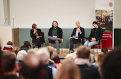
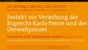
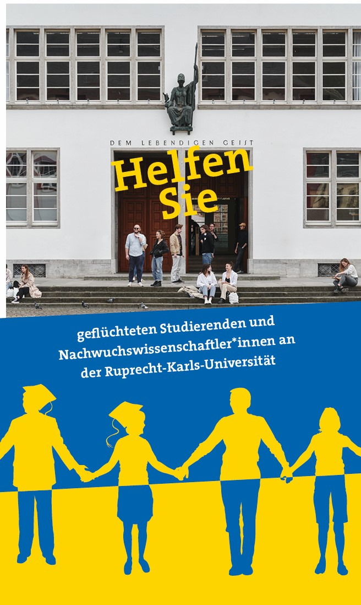

Die Stiftung vergibt Preise an junge Nachwuchswissenschaftler:innen und fördert Maßnahmen, die vor Ort in Heidelberg die Bedingungen für einen regen wissenschaftlichen Austausch der Universitätsmitglieder untereinander und mit Gästen ausländischer Hochschulen optimieren. Sie initiiert darüber hinaus Aktionen zur Einwerbung von finanziellen Mitteln, um der Universität mit Zuschüssen für größere Projekte helfen zu können.

Kant 2024
Zum 300. Geburtstag von Immanuel Kant förderte die Stiftung im Januar 2024 eine Seminarreihe mit dem Philosophen Omri Boehm zum Geist der Aufklärung und lud im März 2024 zum gemeinsamen Besuch der Bonner Ausstellung „Kant und die offenen Fragen“ ein.

Ruprecht-Karls-Preise
Mit den Ruprecht-Karls-Preisen will die Stiftung die Leistung junger talentierter Wissenschaftler:innen herausstellen und diese dazu motivieren, ihre akademische Laufbahn fortzusetzen. Die Preise werden für herausragende wissenschaftliche Arbeiten aus allen Themenbereichen vergeben.

Aktion „UniHDhilft“
Aus Anlass des Putin-Kriegs unterstützt die Stiftung gemeinsam mit Kolleg:innen aus den Serviceeinrichtungen und wissenschaftlichen Instituten der Universität Heidelberg Studierende, Studieninteressierte und Nachwuchswissenschaftler:innen, die aus der Ukraine flüchten mussten und hier eine neue akademische Heimat suchen.
Have your studies or research been disrupted by the war in Ukraine? UniHDhilft supports students and junior researchers from Ukraine who want to continue their work or studies at Heidelberg University. Contact us at freunde@uni-heidelberg.de.